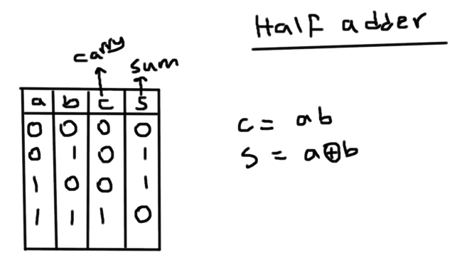
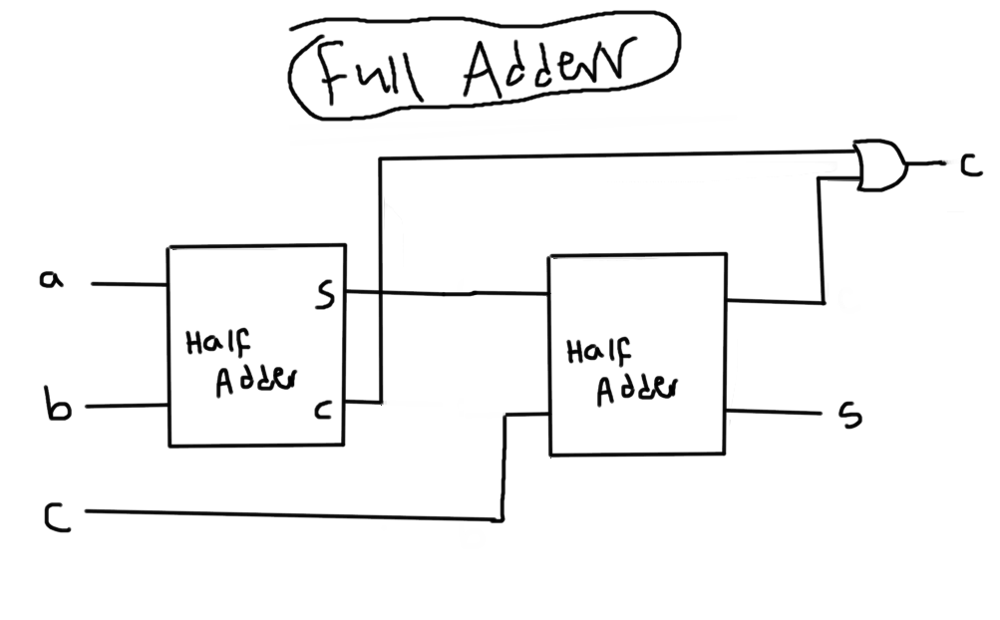
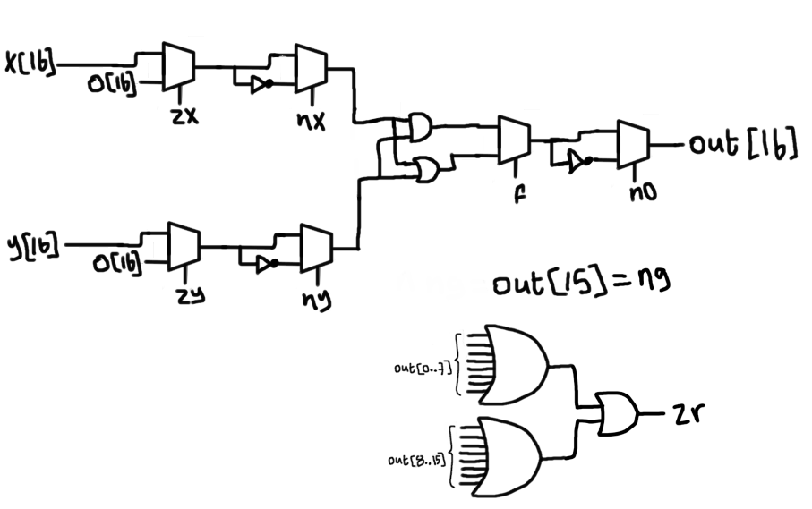

nand2tetris_p2
1. Half Adder:
just construct the truth table and you will know what to do: 
CHIP HalfAdder {
IN a, b; // 1-bit inputs
OUT sum, // Right bit of a + b
carry; // Left bit of a + b
PARTS:
And(a=a, b=b, out=carry);
Xor(a=a, b=b, out=sum);
}
2. Full Adder:
we will just stick two Half Adders together: 
3.ALU
here is the schematic for our ALU (it's pretty self explainatory) 
// This file is part of www.nand2tetris.org
// and the book "The Elements of Computing Systems"
// by Nisan and Schocken, MIT Press.
// File name: projects/02/ALU.hdl
/**
* The ALU (Arithmetic Logic Unit).
* Computes one of the following functions:
* x+y, x-y, y-x, 0, 1, -1, x, y, -x, -y, !x, !y,
* x+1, y+1, x-1, y-1, x&y, x|y on two 16-bit inputs,
* according to 6 input bits denoted zx,nx,zy,ny,f,no.
* In addition, the ALU computes two 1-bit outputs:
* if the ALU output == 0, zr is set to 1; otherwise zr is set to 0;
* if the ALU output < 0, ng is set to 1; otherwise ng is set to 0.
*/
// Implementation: the ALU logic manipulates the x and y inputs
// and operates on the resulting values, as follows:
// if (zx == 1) set x = 0 // 16-bit constant
// if (nx == 1) set x = !x // bitwise not
// if (zy == 1) set y = 0 // 16-bit constant
// if (ny == 1) set y = !y // bitwise not
// if (f == 1) set out = x + y // integer 2's complement addition
// if (f == 0) set out = x & y // bitwise and
// if (no == 1) set out = !out // bitwise not
// if (out == 0) set zr = 1
// if (out < 0) set ng = 1
CHIP ALU {
IN
x[16], y[16], // 16-bit inputs
zx, // zero the x input?
nx, // negate the x input?
zy, // zero the y input?
ny, // negate the y input?
f, // compute out = x + y (if 1) or x & y (if 0)
no; // negate the out output?
OUT
out[16], // 16-bit output
zr, // 1 if (out == 0), 0 otherwise
ng; // 1 if (out < 0), 0 otherwise
PARTS:
//-------------------x--------------------------//
Mux16(a=x, b=false, sel=zx, out=zxOut); //zx
Not16(in=zxOut, out=NotzxOut); //nx
Mux16(a=zxOut, b=NotzxOut, sel=nx, out=nxOut); //nx
//-------------------y--------------------------//
Mux16(a=y, b=false, sel=zy, out=zyOut); //zy
Not16(in=zyOut, out=NotzyOut); //ny
Mux16(a=zyOut, b=NotzyOut, sel=ny, out=nyOut); //ny
//-------------------f--------------------------//
Add16(a=nxOut, b=nyOut, out=nxOrny); //f=1
And16(a=nxOut, b=nyOut, out=nxAndny); //f=0
Mux16(a=nxAndny, b=nxOrny, sel=f, out=fOut); //f
//-------------------no--------------------------//
Not16(in=fOut, out=NotfOut);
Mux16(a=fOut, b=NotfOut, sel=no, out=out, out[0..7]=OutNibble1, out[8..15]=OutNibble2, out[15]=out15);
//-------------------ng and zf--------------------------//
And(a=out15, b=true, out=ng); //ng
Or8Way(in=OutNibble1, out=out1); //zr
Or8Way(in=OutNibble2, out=out2); //zr
Or(a=out1, b=out2, out=out3); //zr
Not(in=out3, out=zr); //zr
}